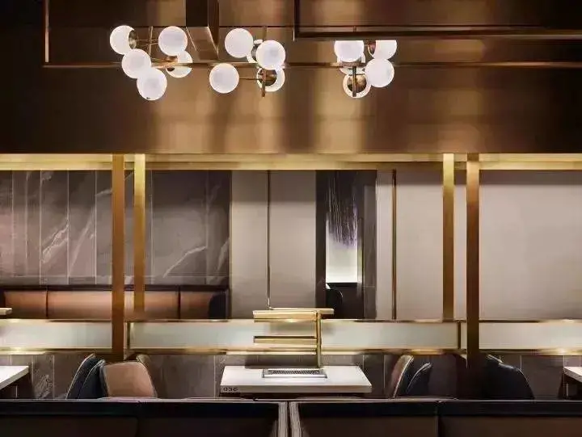

在时代日新月异的今天，变化每天都在发生，最近海底捞换logo了，以服务出名的火锅店开始搞事情了，火锅火辣的形象在logo改良上感觉不到特别大的变化，唯独在餐厅设计上，风格由原来的红黑色搭配变成了极简新潮主义，完全改变了火锅原有的老气横秋的古典历史形象，这可是一大突破，也看出了海底捞也是在顺应年轻人网红餐厅的风潮。
不仅要吃的好，还要吃出新意，海底捞在这个上面一直是在餐饮行业的前沿，具体的各种小案例我就不提了，我们来看看这次海底捞有什么新意。
是的，你没有看错，这家店确确实实是海底捞的新门店，据说是位于西安印象城的品牌形象升级的会员店之一。
店面的设计以黑白灰三色打底的空间，结合大热的黄铜材质，打造ins上“网红气质”的餐厅装修，借此摆脱海底捞以前传统的川式火锅稍显老气的印象。
设计灵感从“Normcore"一词获得，是服装设计领域的用词，由Normal和Hardcore组合而成，即极致的简约，所以店面的设计化繁为简，保留设计细节，营造一种平静的舒适感的用餐氛围。
利用天花造型的体块关系来重新组织空间，以虚拟的界限进行空间的划分，而且设计了多个组接的盒装天花造型，取代了实木的间隔板材，让整个店铺呈现出公共性、开放性和趣味性的视觉效果，并且加强了店面的整体感。
利用空间的边界消失，减少了服务员与顾客碰撞的干扰，服务员可以自由穿梭，既节省时间又节省空间。
而且区别于传统的围坐式用餐，还精心设计了供两位以下客人使用的吧台小火锅用餐处，这设计还是蛮贴心的哈。
除此之外还有
气泡式的灯具

黄铜墙面
最后来张细节图
看完海底捞的设计，最大的体会就是，现在连锁的餐饮门店形象改造，已经成为大品牌们“揽客”的秘诀之一。
例如肯德基变绿 麦当劳升级等等......
但海底捞这次，完全采用极简风的概念，打破大家对火锅店的传统认知。像这种装修"网红风"的店面设计，其实可以挪用到任何餐厅上。
大家会不会因为“黄铜多”而记住海底捞，这就很难说了。毕竟能不能调动食客的用餐气氛，改变品牌的认知度，这也不是件容易的事。

济南海右博纳品牌营销咨询有限公司
Copyright 2001-2019 All Rights Reserved Sivibrand.
王伟品牌顾问微信